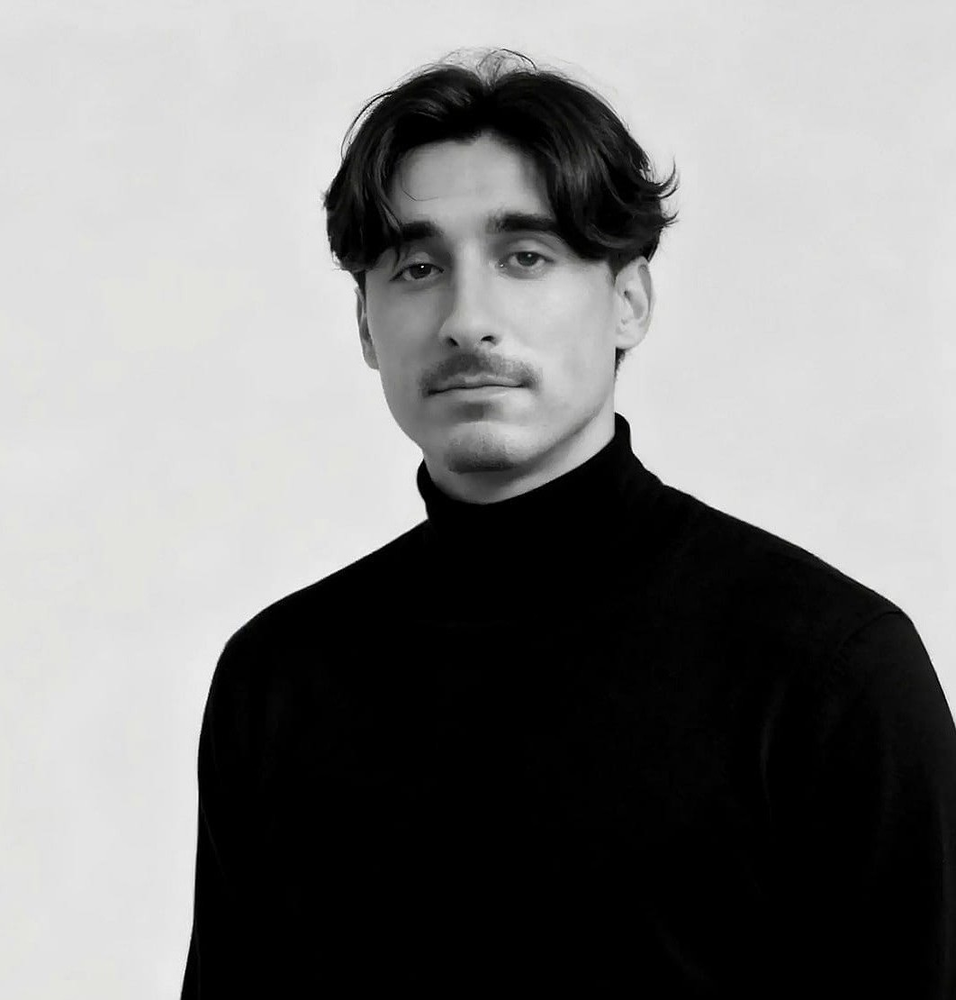

Ingeniero en diseño industrial de 24 años, con base en Valencia. No me considero una persona
enfocada en un campo fijo, sino alguien con un perfil ecléctico, flexible y capaz de adaptarse
a distintos entornos y contextos de trabajo.
No me sitúo ni en un extremo puramente artístico
ni estrictamente técnico, sino en un punto intermedio que me permite comprender y conectar
ambas dimensiones del diseño. He cursado mis estudios en la Universitat Jaume I de Castellón,
continuado en la Universitat Politècnica de València y completado con un programa Erasmus
en Londres.
Cuento además con una formación profesional en electricidad, que me ha aportado
una base técnica sólida y una forma de pensar práctica. Disfruto del proceso de diseño
desde el periodo del desarrollo hasta la materialización terminal.
